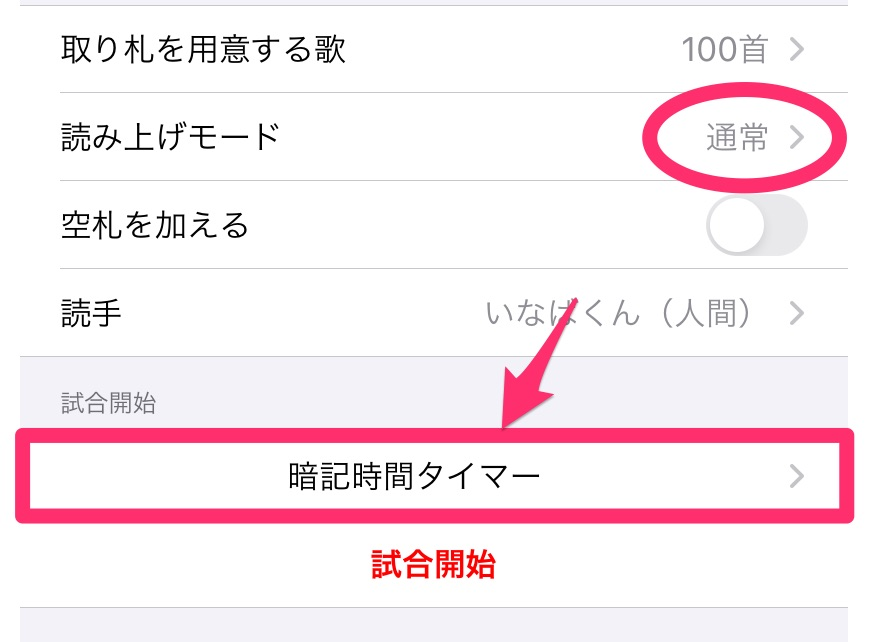

競技かるたの試合では、札を並べ終わったあとに、15分の暗記時間が設けられます。
その15分間を、このアプリで計ることができます。（読み上げモードが「通常」の場合にのみ使用できます。）
通常モードでは、赤い「試合開始」ボタンの上に、「暗記時間タイマー」ボタンが表示されます。このボタンを押すと、暗記時間タイマー画面に移動します。
暗記時間タイマー画面で再生ボタンを押すと、残り時間のカウントダウンが始まります。
以下のタイミングで、アプリがアナウンスします。
- 残り2分: 「競技開始2分前です」
- 暗記時間終了: 「今から競技を開始します」
暗記時間か終了した旨のアナウンスが終わると、自動的にトップ画面に戻ります。
暗記時間タイマーのアナウンス音声には、CeVIOプロジェクトの「さとうささら」を使用しています。